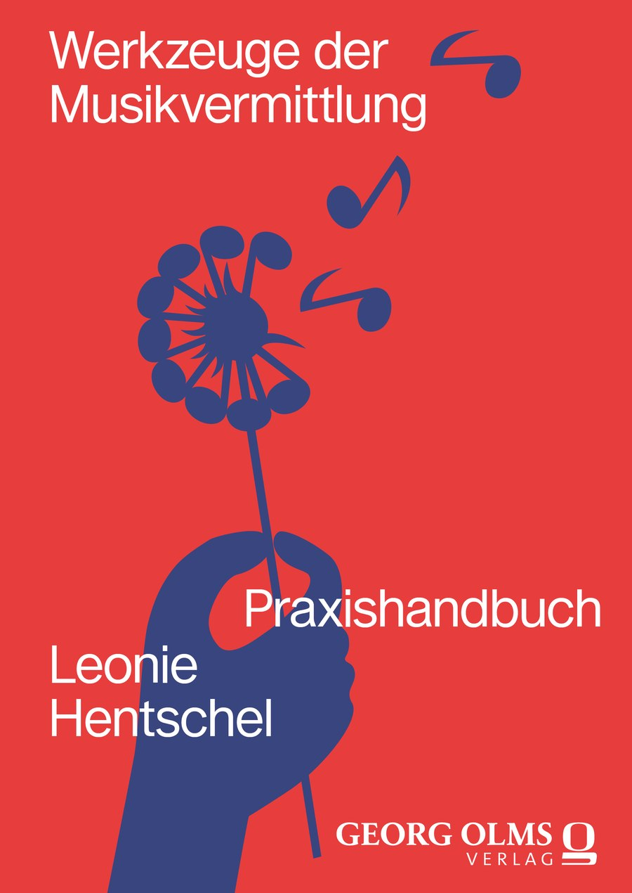

EinleitungIntroduction
Dimensionen unseres HandelnsThe dimensions of what we do
Praxishandbuch · Erscheint 2026 · Georg Olms Verlag Practical handbook · Publishing 2026 · Georg Olms Verlag
Praxishandbuch von Leonie Hentschel Practical handbook by Leonie Hentschel
Für alle, die Musik lieben und sie als Kommunikations- und Lebensform verstehen, sich mit anderen Menschen zu verbinden For everyone who loves music and understands it as a way to communicate and connect with other people

Über das BuchAbout the book
Hast du den roten Faden? Auch an die Technik gedacht und alle Projektbeteiligten mit ins Boot geholt? Solltest du deine Konzeption vielleicht noch etwas kürzen? Do you have the thread running through it? Have you thought about the technical side, and brought everyone involved on board? Should you maybe trim your concept a little more?
In diesem Praxishandbuch erfährst du, wie du ein Programm gestaltest, wie du antizipierst, moderierst, partizipative Workshops kreierst, mit Jugendlichen arbeitest, den Musikvermittlungsbereich strukturierst, Projekte leitest, interdisziplinäre Produktionen entwickelst und Musik lebendig, künstlerisch und vielfältig vermittelst. This practical handbook shows you how to shape a programme, anticipate, host and present, create participatory workshops, work with young people, structure a music-outreach department, lead projects, develop interdisciplinary productions, and bring music to life in artistic, varied ways.
Vom Big Picture bis ins Detail enthält dieses Buch Checklisten, Skripte und Ablaufpläne, Interviews mit Expert:innen aus 11 verschiedenen Perspektiven (u. a. Intendantin, Deaf Poet, Schulleiterin, Dirigent, zeitgenössisches Ensemble) und Denkanstöße, um in der Auseinandersetzung die eigene Positionierung zu finden. From the big picture down to the details, this book contains checklists, scripts, and running orders, interviews with experts from 11 different perspectives (among them an artistic director, a Deaf poet, a school principal, a conductor, and a contemporary ensemble), and prompts for reflection to help you find your own position.
„Musik ist eines der schönsten Phänomene, die es in dieser Welt gibt." "Music is one of the most beautiful phenomena that exist in this world."
— Leonie Hentschel
Themen im ÜberblickWhat's inside
Dimensionen unseres HandelnsThe dimensions of what we do
Das Handwerk der MusikvermittlungThe craft of music outreach
Musikvermittlung im Kulturbetrieb managenManaging music outreach within institutions
Skripte und Konzepte zur direkten AnwendungScripts and concepts ready to apply
Visionen für den KlassiksektorVisions for the classical sector
Kurze Fragen zwischen den Kapiteln laden dazu ein, die eigene Haltung und Praxis zu reflektieren.Short questions between chapters invite you to reflect on your own attitude and practice.
Stimmen aus dem BuchVoices from the book
„Wir sollten höchste Ansprüche an uns selbst stellen, um Erlebnisse zu schaffen, die klar, nahtlos und überzeugend kommunizieren." "We should hold ourselves to the highest standards, to create experiences that communicate clearly, seamlessly, and convincingly."
„Vertraue darauf, dass das junge Publikum Zugang zu komplexer Musik hat. Es will herausgefordert werden. Be brave and bold!" "Trust that young audiences can access complex music. They want to be challenged. Be brave and bold!"
„Kommunizieren, in Verbindung treten, Leute suchen, die genauso wie man selbst für Musik brennen — gemeinsam und nicht als Einzelkämpfer:in." "Communicate, connect, find people who burn for music just like you do — work together, never as a lone fighter."
„Musik ist total subjektiv, und das dürfen Kinder oder das Publikum merken." "Music is completely subjective — and children or audiences should be allowed to feel that."
„Transkulturelle Musikvermittlung eröffnet eine positive Zukunftsvision, und da lohnt es sich, diesen Strang größer zu machen." "Transcultural music outreach opens up a positive vision for the future — and it's worth growing that thread."
Über die AutorinAbout the author
Bestellen & KontaktOrder & contact
„Werkzeuge der Musikvermittlung" erscheint im September 2026 im Georg Olms Verlag. "Werkzeuge der Musikvermittlung" is publishing in September 2026 with Georg Olms Verlag.
ISBN 978-3-487-17237-8 · Georg Olms Verlag